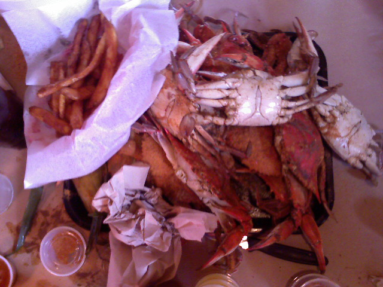
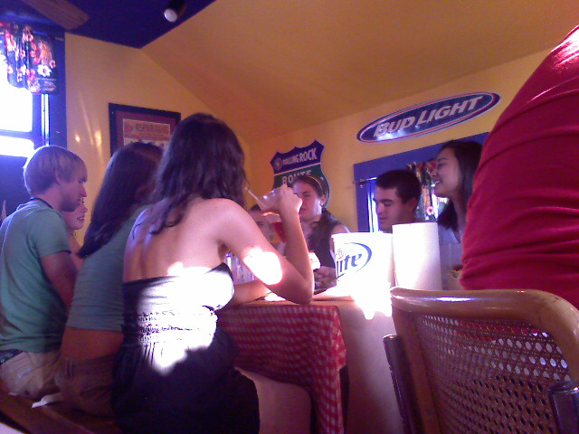
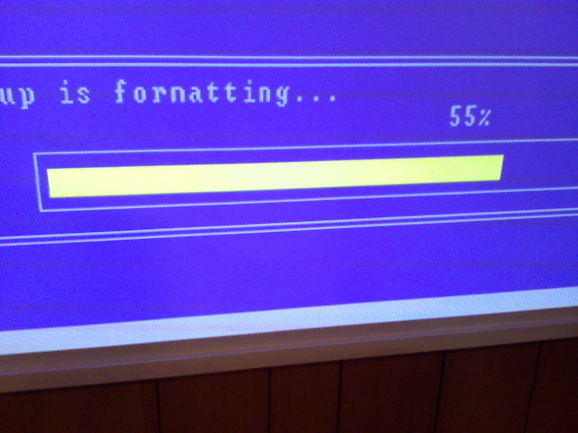

Off To Montana
Kristina and I are waiting to board our flight to Montana for Kristina’s cousin’s wedding. We have a 2 hour layover in Denver before reaching the big sky country so expect to see another update then.

Kristina and I are waiting to board our flight to Montana for Kristina’s cousin’s wedding. We have a 2 hour layover in Denver before reaching the big sky country so expect to see another update then.

On my way home from work where I come to find a horde of angry commuters waiting for the red line train at Metro Center. Aparently there is a system wide signaling problem. Argh! Atleast I have a bunch of podcasts to listen to while I wait.
It gets better. The first train was way too packed for me to get on. The second train was only going to Silver Spring which doesn’t help me who is trying to get to the end of the line in Glenmont. I got on the third train and after 10 minutes of repeatedly opening and closing the doors, the train was put out of service and everyone had to unload. The forth train was another Silver Spring train. I finally made it onto the fifth train after arriving at Metro Center.

Kristina and I dropped off two trash bags of clothes at the Salvation Army today. We were busy moving her from College Park to my apartment in Glenmont. Since we were at the Salvation Army, the fiance and I looked around and found this ugly $35 chair.


We had a party last night to celebrate my roommate’s 26th birthday. Things got a little out of control when a stuffed baby Shrek doll was sacrificed in our living room. Good times.

It started storming here at Bethany Beach. Lighting would light up the sky like it was day time and the rain was coming down hard. At first I thought the thunder was fireworks over the nearby beach. Since we didn’t have any firework plans Kristina and I and our friend Katie made Mojitos and rented “Be Kind Rewind” starring Jack Black and Mos Def.


Kristina and I stopped into a store on Central Avenue in Bethany that sold vintage signs and other weird stuff. The sculpture of the monkey holding it’s nose is a toilet paper holder and costs $120.


A group of friends and I made our way to the Crab Bag on 130th street in Ocean City. Most everyone got the all-you-can-eat crabs, corn, hush puppies, and fries for $24.99. I don’t eat seafod so I got a cheeseburger and a diet coke.
It’s our first day in Ocean City and we made our way to the beach at 139th street. It’s not that crowded on this Tuesday morning and there is a refreshing breeze in the air.

I’m at my parents house upgrading an old Dell computer from Windows 98 to Windows XP. I don’t know if it is just my install disc or what but anywhere it should read format it instead reads fornat. This is an original XP install disc (shiny reflective surface and all) not some pirated copy downloaded off the Internet. Anyways this old PIII is hooked up to a projector so I only noticed it when it was being projected on a 78 inch diaganol screen.